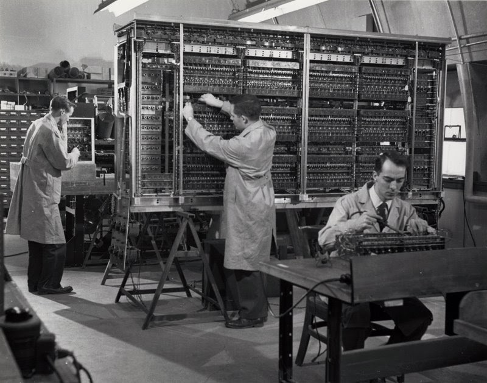
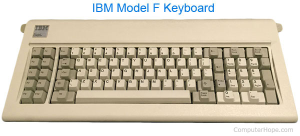
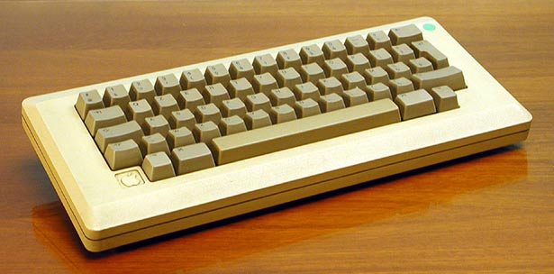
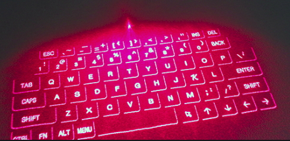
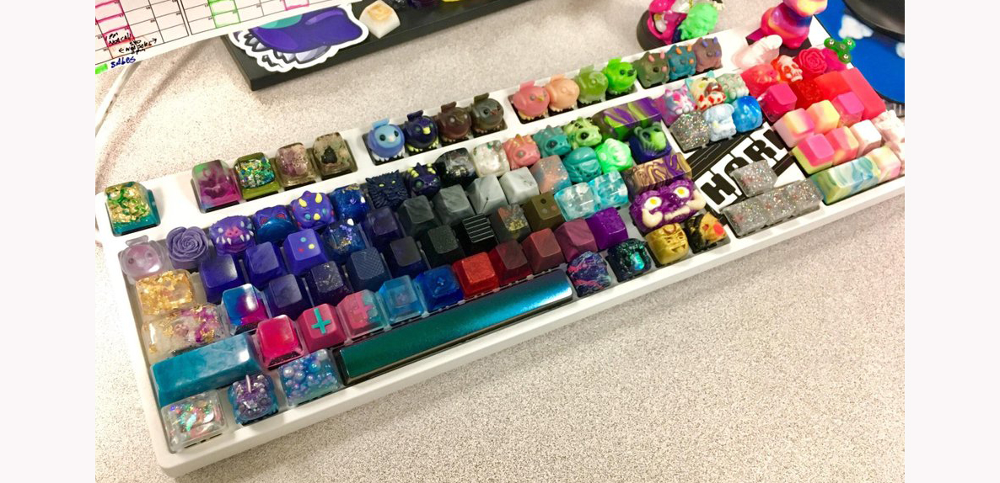

Historie
Skrivemaskiner
Oppfinnelsen av det moderne tastaturet kan spores tilbake til oppfinnelsen av skrivemaskinen. Så, hvem oppfant skrivemaskinen?
Først (kjent for oss) var Francesco Rampazzetto (1510-1576), Prior of the Guild of Booksellers and Printers in Venice (Venezia), som oppfant i 1575 scrittura tattile, en maskin for å imponere bokstaver på papir (det ser ut til at maskinen var et hjelpeapparat for blinde).
Henry Mill var innehaver av to engelske patenter - №376 fra 1706 og №395 fra 1714. Den første var for Springs for busser, vogner og andre kjøretøyer (en slags støtdemper). Det andre patentet (datert 7. januar 1714) var for Machine for Transcribing Letters, som ser ut til å ha vært ganske lik en moderne skrivemaskin.
nbsp;
Vi har ikke tegning av maskinen, og det er ingen gjenværende oversikt over at Henry Mill faktisk bygget den.
I følge legenden hadde Pellegrino Turri forelsket seg i den vakre grevinnen Carolina Fantoni da Fivizzano (1781-1841), en nevø av den italienske poeten Labindo. Den unge kontessas visjon sakte, forvrenger og blekner sakte. Så i håp om å forbedre hennes uleselige skriving og for å gjøre det mulig for henne å korrespondere med vennene sine (inkludert ham) privat, laget Turri på begynnelsen av 1800-tallet en maskin laget av nøkler og metallarmer med hevede tegn. Da grevinnen presset en nøkkel, slo en arm et stykke karbonpapir oppå et ark.
Som med mange andre moderne maskiner, som fly, bil, telefon, TV osv., Bidro en rekke mennesker med innsikt og oppfinnelser som til slutt resulterte i et kommersielt vellykket produkt, det samme skjedde med oppfinnelsen av skrivemaskinen (og tastaturet på datamaskinen).
Så møter vi engelskmannen Henry Mill (1683-1771), en vannverkstekniker i New River Company (som administrerte New River - en kunstig vannvei i England, åpnet i 1613 for å forsyne London med ferskvann).
Patentet uttalte: ... Vår pålitelige og kjæreste Henry Mill, gent., Har av sin petitcon ydmykt representert at han ved sin store studie og smerte og kostnad oppfunnet og brakt til perfeksjon en kunstig maskin eller metode for å imponere eller transkribere bokstaver, den ene etter den andre, som skriftlig, der all skrift overhodet kan være oppslukt av papir eller pergament så pent og nøyaktig at det ikke skilles fra trykk; at den nevnte maskinen eller metoden kan være til stor nytte i bosetninger og publiseringsjournaler, inntrykket er dypere og mer varig enn noe annet skrift, og ikke å bli slettet eller forfalsket uten åpenbar oppdagelse.
Den første arbeidsmodellen til en skrivemaskin ble laget av italienske Giuseppe Pellegrino Turri, en edel og dyktig mekaniker, tidlig på 1800-tallet. Turri oppfant også karbonpapir for å gi blekket til maskinen sin. Nesten ingenting er kjent om maskinen, men noen av bokstavene som er skrevet på den har overlevd (16 bokstaver er bevart i et museum i Reggio Emilia).
Data tastaturer

Mens skrivemaskiner ble brukt mye gjennom 1950- og 1970-tallet, begynte datamaskiner å fremstå som et forbrukervennlig produkt, og begynte alderen på tastaturet som en primær inngangsenhet. For å forstå utviklingen av tastaturet, er det viktig å forstå utviklingen og utviklingen av datamaskinen. I 1946 ble den første datamaskinen, ENIAC konstruert, og teletype ble brukt til å legge inn data. Som du kan se nedenfor, tok ENIAC-datamaskinen et helt rom, hundrevis av ganger større enn den moderne bærbare datamaskinen. Hva var teletype, og hvordan er den forskjellig fra moderne tastaturinngang?
UNIVAC Teletype Teletype- og ENIAC-datamaskiner brukte kort (lignet på indekskort) som ble satt inn i teletypen mens en serie hull kalt tastetrykk ville bli stanset inn i kortene i henhold til hvilke taster ble trykket på teletypemaskinen. Etter at kortene ble tastet av datamaskinen, ble de overført til en kortleser som ville analysere kortstokken som data (håndfast minne).
1960 Keypunch Reader med tillatelse fra Computer History Museum I 1948 brukte BINAC-datamaskinen en annen inn / ut-metode, med en elektromagnetisk styrt teletype for å legge inn data og skrive ut resultater. BINAC er det som banet vei for formen på datamaskiner og tastaturer, selv om det fremdeles vil ta noen flere tiår å bevege seg bort fra teletype / punchcard-datamaskiner. En annen punchcard-datamaskin som var populær på den tiden, var UNIVAC I, produsert i 1951, er også avbildet nedenfor.
1940-tallet ENIAC Keypunch Printer and Card Sorter i drift. Bilde med tillatelse fra Computer History Museum UNIVAC datamaskin 1960-tallet UNIVAC-datamaskin i drift. Legg merke til teletype-inngangsenheten til venstre for ham. Hilsen av Computer History Museum I 1964 ble Bell Labs og M.I.T. opprettet MULTICS-datamaskinen, et tidsdelingssystem for flere brukere med VDT, en videoterminal. Tekst var umiddelbart synlig på skjermen mens den ble skrevet, noe som gjorde kommunikasjonskommandoer, programmer og kontroller til datamaskiner mer effektive enn tidligere metatypemetoder for inndata. På slutten av 1970-tallet brukte alle datamaskiner VDT og elektriske tastaturer. Det var rett og slett den mest enkle og brukervennlige metoden for samhandling med datamaskiner (ingen bunke kort for å slå hull i og holde orden). De første tastaturene som ble solgt på 1970-tallet, ble alle bygget fra bunnen av, stykke for stykke, og var tunge da de var helt mekaniske. Siden det trengtes så mye tid og krefter for å lage disse tastaturene, og siden målmarkedet primært var dataprogrammerere og ingeniører, ble de bygget for funksjon og ikke for visuell estetikk. Dette betydde at det ikke var et tastaturdeksel eller skap, noe som gjorde tastaturet mer eller mindre eksponert.
1970-tallet Altiar Computer med eksponert tastatur med tillatelse fra Computer History Museum Det var også tastaturer som ble bygget inn i personlige datamaskiner på den tiden. På midten av 1970-tallet opprettet Imsai og Altair de første små PC-ene for forbrukerbruk, vanligvis referert til som S100-datasystemene. Disse maskinene ble bygget stykke for stykke, og ga det viktigste. Det var ingen harddisker eller disketter på disse første maskinene, så det var ingen måte å lagre data på. Tastaturet var plassert på frontpanelet på datamaskinen, som et sett med nøkkelbrytere. Hvis brukerne ønsket et standard tastatur, solgte IBM en konvertert elektrisk skrivemaskin, men da forsyningene var begrensede og produktet ikke var i høy etterspørsel, måtte mange brukere konvertere sine egne elektriske skrivemaskiner hvis de ønsket et enklere å bruke tastaturet for å angi programmeringskode. I tillegg måtte et annet tastatur kobles til for datainnføring. Det ble ikke levert med kjøpet, noe som krevde at brukerne måtte bygge sine egne.

1970-talls oppsett av Altair hjemmekontor. Hilsen av Computer History Museum. På slutten av 1970-tallet hadde Apple, Radio Shack og Commodore alle forutseende for å se det store markedet for datamaskintastaturer, og begynte å produsere tastaturer for datamaskinene sine, og banet vei for den moderne antagelsen om at alle datamaskiner har tastatur, og at tastaturer er den primære, standard inngangsenheten. Nedenfor er en Radio Shack-reklame fra 1970-tallet for TRS-80. I 1981 ga IBM ut sin første PC. I 1986 ble den utstyrt med Model M-tastaturet. Dette tastaturet var veldig vellykket fordi det var så enkelt å bruke, at brukerne ikke trengte å konvertere skrivemaskiner eller levere sin egen tastaturutforming som en inndataenhet for datamaskinene sine. Model M var et mekanisk tastatur, og brukte konstruksjon av høyeste kvalitet, noe som ga typister tilfredsstillelsen av taktil tilbakemelding, akutt akkurat.
Model M var et mekanisk tastatur, og brukte konstruksjon av høyeste kvalitet, noe som ga typister tilfredshet med taktil tilbakemelding, akutt nøyaktighet og komfort. Den eneste ulempen på dette tastaturet var at "Shift" og "Enter" -tastene angivelig var for små for de fleste brukerens preferanser. På grunn av dette produserte og solgte IBM "Keytop Expanders" som passer over skiftet og skriver inn nøkkelbrytere for å utvide tastene. Alle tastaturene på dette tidspunktet var begrenset ved at de bare ble tilbudt i to farger: beige og grå, helt til slutten av 1980-tallet da svart ble introdusert som et alternativ.
Utvikling til idag
På 1990-tallet begynte membranbrytere å erstatte den mekaniske nøkkelbryteren, da den var stille, veide mindre og passet behovene til den nye bærbare generasjonen. Dette var også en fordel for produsentene fordi membrantastaturer var mye billigere å produsere. Dessverre falt kvaliteten på tastaturet betydelig da disse overfladiske tastaturestetikkene dominerte (slankere, roligere, lettere vekt, lettere å være mobil med). Teknologien og mekanikken til disse tastaturene vil bli beskrevet i fremtidige kapitler, og informasjon om mekanisk tastatur finner du her: på vår mekaniske tastaturguide. Her er et bilde som viser den dramatiske forskjellen mellom tidlige mekaniske Apple-tastaturer (1983), og flere tiår senere de moderne ikke-mekaniske Apple-tastaturene (2010).
Andre endringer i tastaturdesign, enten de forbedrer funksjonen eller ikke, har inkludert foldetastaturet, det vanntette (og vaskbare) tastaturet, tastaturet som også fungerer som en mus, tastaturer i tommelstørrelse (for mobile enheter og reiser) og virtuelle berøringsskjermtastaturer.

Gjennom årene har det vært flere andre design som grenser til science fiction - som lasertastatur, det flygende tallerkenens tastatur, manetetastaturet og det fullt programmerbare LCD-nøkkelskjermbildet Optimus Maximus Keyboard. Det er tankevekkende å se utviklingen av tastaturer når det gjelder hvor de startet som teletypemaskiner og skrivemaskiner - til hvor de har utviklet seg til alle alternativene vi har bokstavelig talt innen fingertuppene.

Tastatur kommer i alle fasonger, størrelser og farger i disse dager, selv om det er viktig å huske at uten de originale, enkle, kraftige mekaniske tastaturene til IBM, ville vi ikke være der vi er i dag. Med alle designinnovasjonene som produseres, er det ingen overraskelse at mange kreative tastaturfans har begynt å dukke opp med sine egne oppfinnsomme modifikasjoner for å forbedre skriveopplevelsen og estetikken. Richard “Doc” Nagy har tatt sin kreativitet og håndverk til neste nivå innen tastaturdesign og har bygget noen veldig interessante og oppfinnsomme tastaturmods som ser ut til å ha reist tilbake i tid, med en paradoksalt futuristisk kant. Docs modifiserte mekaniske tastaturer er ekte kunstverk (og fullt funksjonelle), fra steampunk og art deco-tastaturer, til tastaturer med krabbelfliser for nøkler. Besøk Docs nettsted, Datamancer.net for hans komplette galleri.